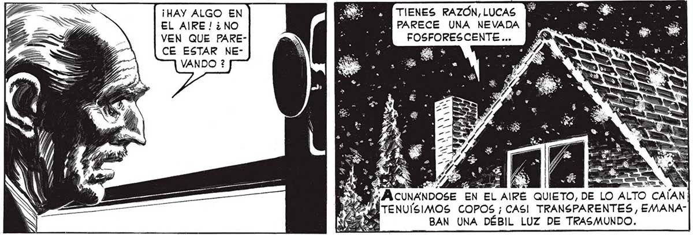
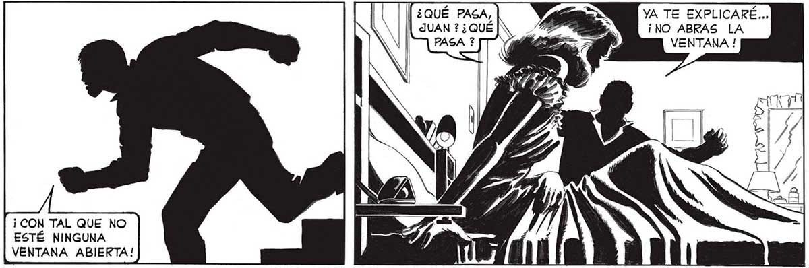
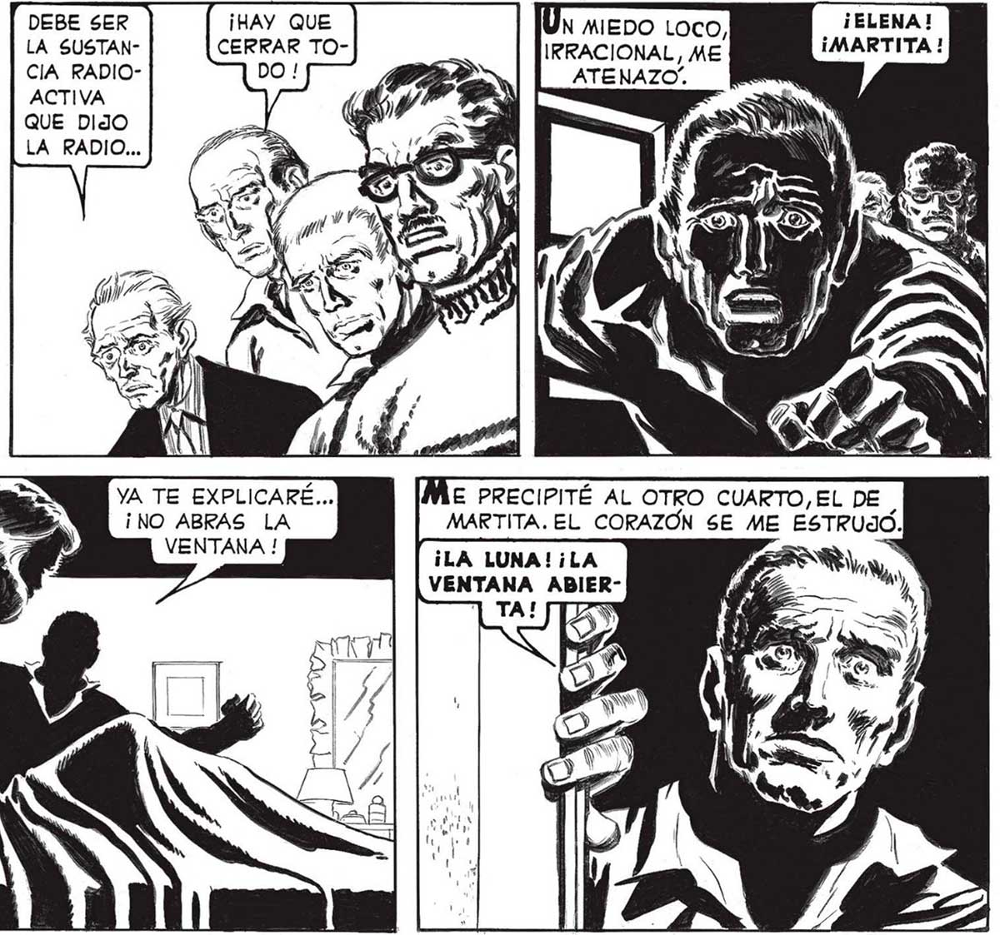

20 ¡NO! ¡NO ABRAS, PERO... ¿POR QUÉ ? ¿JS poa ] la 1 3 . . , o. » , $ LA 4 ¿ de 0 ds ya y» EY . . e y > > EZ e sar 3 A y AS ¡AAA - a FAN > az > 173 e ATI y > ES 2 x == . ea e —. pe dl - - a = * ER Ca hal A Tono HASTA DONDE SE PODÍA VER,SE te : , JUNE CUBRÍA YA DE AQUELLA NEVADA. NEOMA VADA IRREAL, NEVADA DE DIBUJOS ANIJS EN MADOS. Y MORTAL , TERRIBLEMENTE MORTAL... [ ¿QUÉ PASA, | JUAN ? ¿QUÉ ¡ CON TAL QUE NO ESTÉ NINGUNA VENTANA ABIERTA! ¡HAY ALGO EN EL AIRE! ¿NO VEN QUE FARECE ESTAR NEVANDO ? DEBE SER LA SUSTANCIA RADIOACTIVA QUE DIJO LA RADIO... ¡HAY QUE CERRAR TOYA TE EXPLICARÉ... ¡NO ABRAS LA VENTANA ! TIENES RAZÓN, LUCAS ÑPARECE UNA NEVADA [ FOSFORESCENTE... Ny AO a A Y AN y e a «3 : > NS 4 ¿Soy +. AN "ni $ 18 A - .. sw + , 2d _—_—_— Y BS » hs /, A EN EL AIRE QUIETO, DE LO A N TENUÍSIMOS COPOS ¡CASI TRANSPARENTES, EMANABAN UNA DÉBIL LUZ DE TRASMUNDO. ¡ELENA ! ÓN miEDO Loco, Mo 1 IRRACIONAL, ME E PRECIPITÉ AL OTRO CUARTO, EL DE MARTITA. EL CORAZON SE M ¡LA LUNA! ¡LA VENTANA ABIERY] TA!


